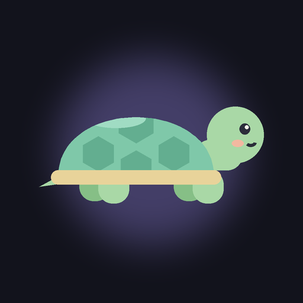

Sensory SafeScape
Calm sensory play and visual routines for autistic and sensory-sensitive children, ages 2–10.
Calming Canvas: touch and drag to make soft, glowing waves, with a slow breathing guide.
Visual Routines: picture steps, First/Then, short spoken stories for the doctor, dentist, school and bedtime.
Soothing Sounds: gentle sounds with high pitches filtered out, and a slow bedtime fade.
Wait Timer: a shrinking disc that shows what comes next, with no alarm.
For grown-ups: sensory settings, a routine builder, several children, progress and a PDF summary for therapists.
Free. No ads. No tracking. No sign-up needed.
Privacy policy · Delete your data
Made by HomiLabs · info@homilabs.org